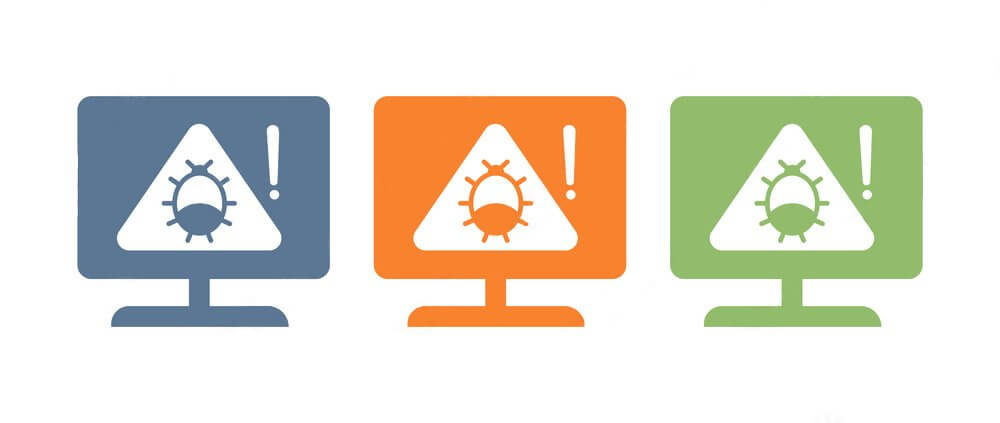
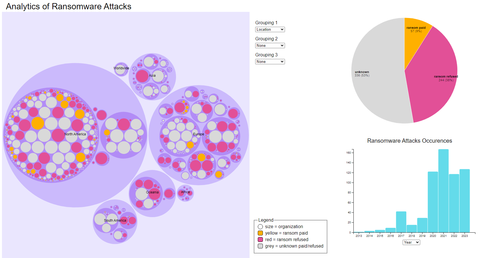
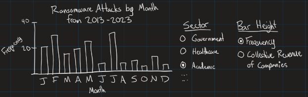
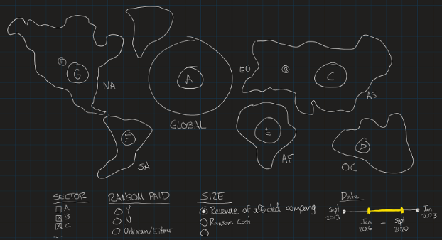
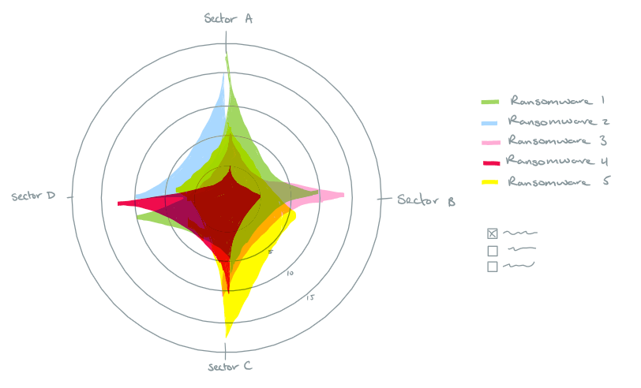
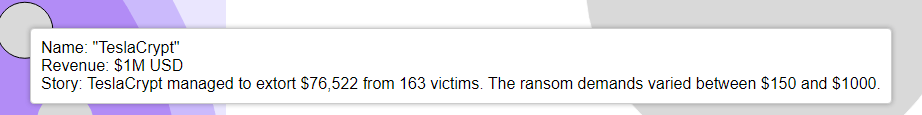
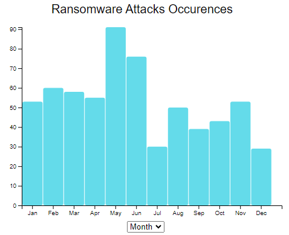
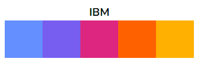

Data Visualization: Cybersecurity Ransomware Attacks
Overview
It's known that ransomware attacks are becoming increasingly prevalent and sophisticated over the past decade. These attacks involve malicious software that encrypts data, rendering it inaccessible until a ransom is paid to the attackers, typically in cryptocurrency. Trends indicate a sharp rise in both the number of attacks and the ransoms demanded. Cybersecurity websites like Krebs on Security regularly report on the latest incidents and tactics used by ransomware attack groups. Research articles and journals from IEEE analyze the technical and economic impacts of these attacks. There are also government reports from agencies like the FBI that provide static visual data on ransomware trends.
This project aims to visualize the trends and common themes of ransomware attacks using data from the past decade by analyzing patterns within the data. With the rising threats of ransomware affecting individuals, businesses and government; raising awareness about the prevalence and impacts of these attacks is crucial.
Click here to try the interactive visualization!
Data Collection
This dataset contains 638 data cases. Approximately 40% of the data cases were recorded ransomware attacks from 2021-2023. The data contains 32 data dimensions, 17 of which will provide helpful data towards the data visualizations.
The data cases are various global ransomware attacks that happened between 2013 and 2023. The data dimensions are targeted organization, sector the organization is in, organization size, company revenue, revenue during the date of attack, ransom cost, if ransom paid, time of attack, location of company/attack, description of attack, type of ransomware, stock symbol, amount of employees, source URL.
The data is publicly available and was able to be downloaded in a CSV format. The data requires little processing.
Why is this Important?
As a computer science student, understanding ransomware attacks can be beneficial to our future careers. Ransomware represents significant and growing threats to individuals, businesses, and governments making it imperative for us to understand. By visualizing the data, I hope to uncover trends and patterns that are not immediately apparent in the raw data.
There were some initial interesting data questions:
- Does the time of year / month have any correlation with the targeted sector of the attack? (Do academic sector attacks die down during the summer? Do government sector attacks flare up during tax season?)
- Are there any relationships between geographical factors, the size of an organization, or the likelihood and cost of a ransomware attack?
- What are the most common characteristics of organizations that chose to pay the ransom and those who do not?
Design Ideation
Initially there were some different visualization sketches drawn up. Although majority of the ideas weren't used, they helped narrow down on important features that should be added to the final visualization. Below are some of the sketches that were created:
-

This sketch shows a histogram-like distribution of the frequency of attacks per sector based on the month of the attack. An option is given to change the height of the graph to either represent frequency (how many attacks happened in the specified sector during this month) or collective revenue of companies (sum of the revenue from the affected companies of the specified sector during this month). Adding this option should allow users to see the difference between a month being flooded with many small attacks, or a small amount of large attacks.
-

This sketch shows a global map of the 6 major continents alongside an additional land plot to represent any ransomware attack that targeted the globe. This map would be interactive and allow you to zoom in or out which would incrementally show more ransomware attacks as you zoom in (since displaying too many would clutter the map). The user is able to control many filters such as sector, whether ransom is paid, what the size of the points represents, and the date range shown.
-

This sketch shows a radar graph displaying various business sectors as its axes, each representing a different industry such as health care, finance, tech, retail. etc. Each axis extends from the center of the graph with concentric circles (could also be a polygon for better visual appeal) indicating the number of successful ransomware attacks. Different types of ransomware are plotted on the graph as distinct data shapes represented by unique colour hues. There are filters on the side to allow the users to filter from multipurpose ransomware to ones that are better at attacking specified sectors. This design is simple and visually interesting which can help in maintaining audience attention and presents complex data in an easily digestible way.
Creating the Visualization
This project was done using D3.js which is a JavaScript library for producing dynamic, interactive data visualizations in web browsers. D3 has examples of what can be created on its' website, so I took a look and went from there.
I used a combination of visual encodings (2d size, 1d size, colour hue) to effectively communicate the data of ransomware attacks. The circle packing chart was the main focus with the size of each circle representing the revenue of the organization. Larger circles corresponded to higher revenues, providing an immediate visual cue about the relative scale of each organization. The circles are colour coded based on the organizations response to the ransom demands - paid, refused, or unknown. The colour encoding helps quickly identify trends or patterns across differing groupings. Additionally there is a hover effect that goes into more detail about the organization.
The histogram shows the occurrences of ransomware attacks either yearly or monthly (axis changes based off of a drop down). This temporal data dimension adds context to the data allowing users to see the frequency of attacks and identify any trends whether seasonal or long term. There is also a pie chart that summarizes the proportion of organizations that have paid the ransom or refused; this offers a picture of the overall landscape. This dashboard view ensures that all the data points are visually connected enhancing the ability to draw insights from correlations between all the charts.
The interactive elements are a key feature of this visualization. The circle packing chart offers 3 different drop down menus to group the data by different factors on varying depths. The graph is grouped in the first depth by continent, then country, and lastly sector. Clicking into each encompassing circle will zoom the graph into the next depth. The interactivity allows users to customize and focus their view on specific aspects of the data that are relevant to their interest and needs (relationships between geographical factors, size of an organization, likelihood attack, etc.). When changing the focus on the circle chart the histogram and pie chart will live update its data to ensure that all visualizations remain synchronized. This provides a cohesive and responsive user experience.
To ensure accessibility I chose to use a colour pallet with the “intention of being accessible to people who are colorblind” (David Nichols) from the IBM Design Library. This pallet was chosen since there is a limited number of colour hues used (4-5 in the whole visualization). These colours allow users to interpret the encodings accurately, as well as lend the visualization some aesthetic and visual appeal. Before finalizing the colour choices for the visualization I had someone with deuteranomaly (red-green color vision deficiency) to test the accessibility of the colours used. There is also a legend attached to the circle packing chart that identifies the colour hues displayed in the chart, this is there to assist users in connecting the data encoding to the data.
Reflection
This project presented a unique opportunity to develop technical, analytical, and collaborative skills through the creation of an interactive site that visualized key trends in global ransomware attacks. The project’s goal was to explore critical questions about ransomware, translating real-world data into a visually engaging format to uncover insights regarding attack patterns across different sectors and regions.
Since I knew little about working with the D3.js library, I collaborated with my others to help create my vision of the visualization. The collaborative aspect of the project played a significant role in its success. We worked together to discuss data visualization techniques and solve technical challenges. This teamwork fostered creativity and enabled issues to be resolved quickly, particularly when balancing design aesthetics with the functionality of the visualizations.
One of the primary technical challenges was effectively representing multiple data dimensions—such as company revenue, location, and ransom payment status—while maintaining an intuitive user interface. Through several design iterations, the final solution featured a circle packing chart, histogram, and pie chart, allowing users to interactively explore the data. These elements provided insights into trends, such as correlations between the time of year and sector-specific attacks, as well as patterns related to ransom payment decisions based on geographic location.
The project also highlighted the critical role of human interpretation in data analysis. While the visualizations revealed important trends, it required careful consideration to fully understand the complexities and avoid misleading conclusions. For example, the observed decline in tech sector attacks may not solely indicate stronger security but could reflect shifting attacker focus. Similarly, the apparent concentration of ransomware incidents in North America and Europe might be influenced by dataset biases rather than true global patterns. This reinforced the importance of combining visual data representation with contextual analysis to draw accurate conclusions.
This project advanced both my technical and analytical skills in data visualization while demonstrating how data can be used to tell compelling stories. It combines the importance of thoughtful design in communicating complex insights and emphasized the responsibility of accurately interpreting and presenting data.